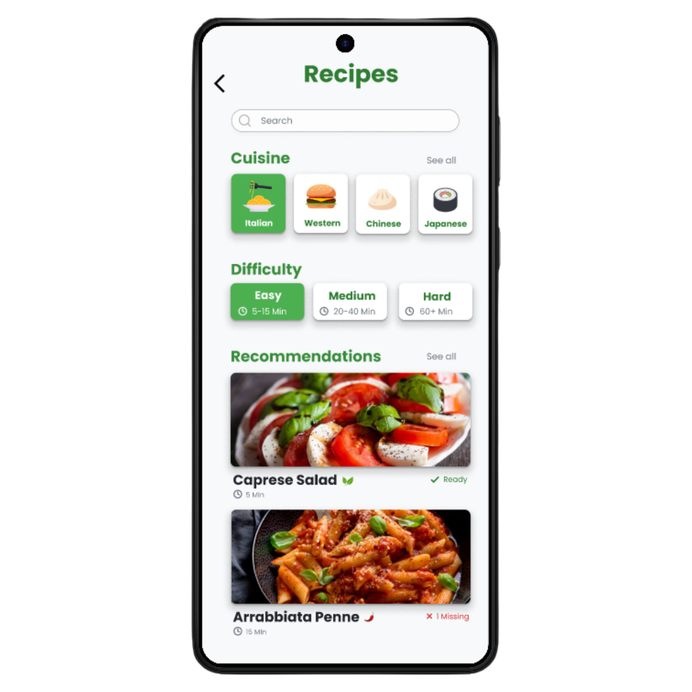
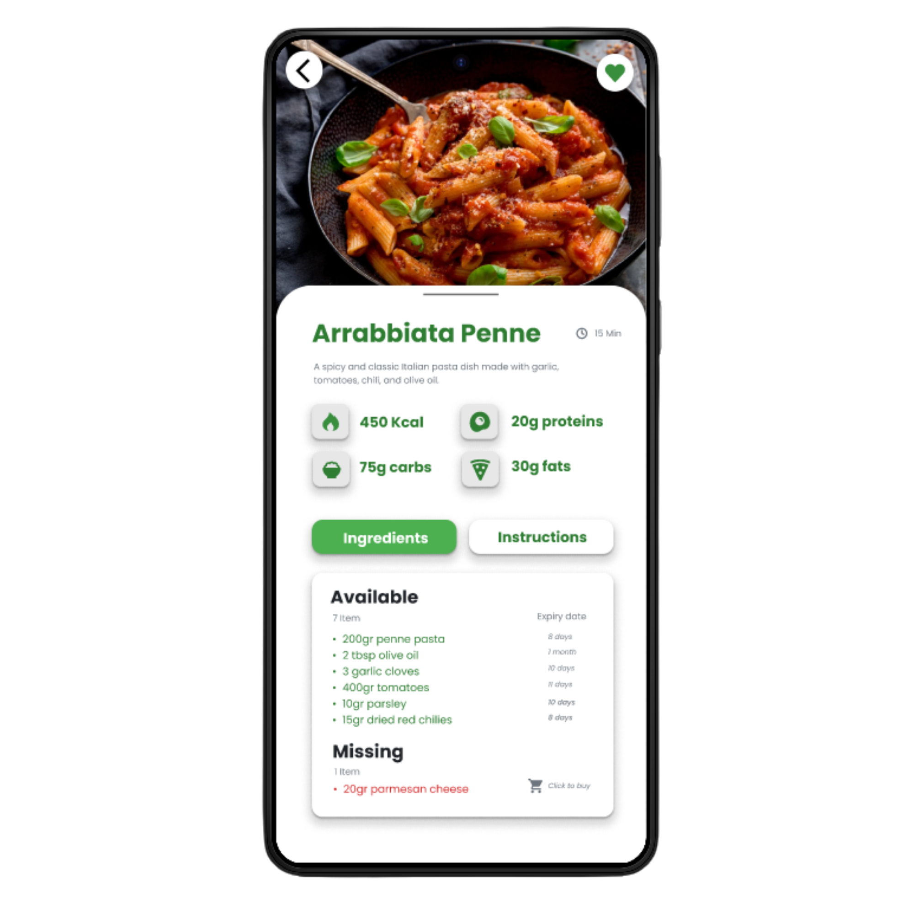
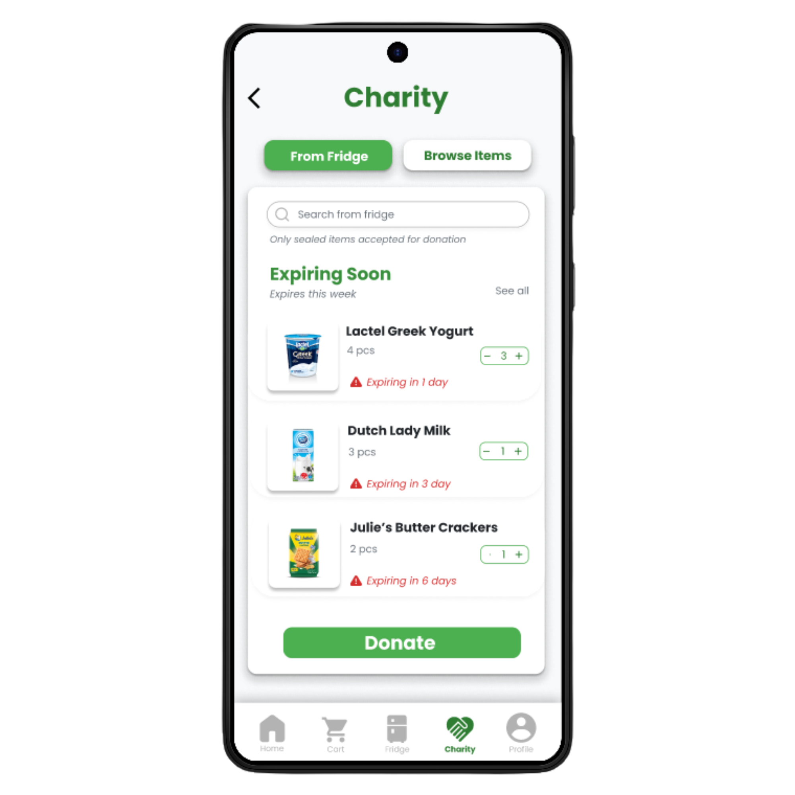
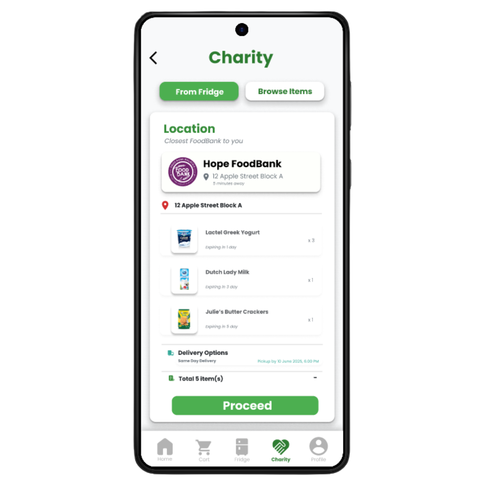
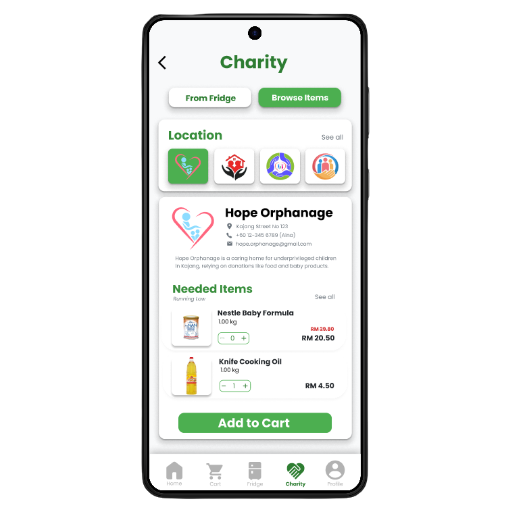
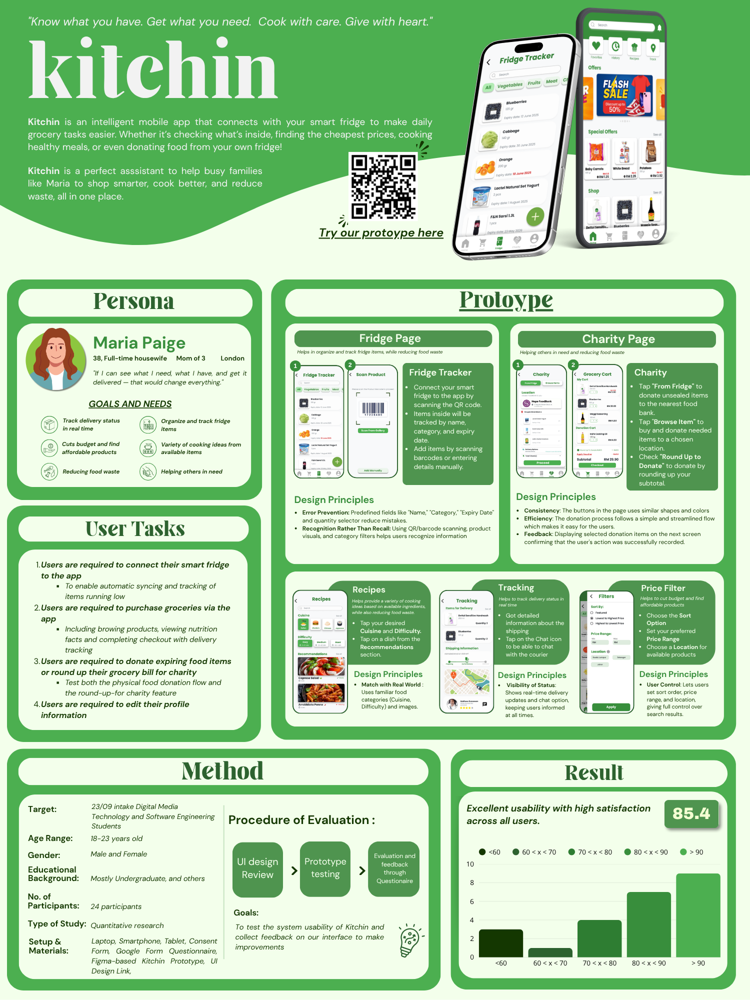

Kitchin: Smart Fridge & Food Waste Reduction
An intelligent mobile application connecting with smart fridges to eliminate household food waste. Kitchin helps families shop smarter, cook recipes using available ingredients, and donate expiring groceries directly to local shelters.
The Problem & Persona
Rising grocery costs and busy lifestyles lead to millions of tons of edible food thrown away every week.
"If I can see what I need, what I have, and get it delivered — that would change everything."
Core Features
Connect fridge via QR scan to auto-track item expiration countdowns and reduce waste.
Filter by cuisine and cooking difficulty using items already inside your fridge.
Donate expiring sealed groceries or round up cart totals to local orphanages.
Designed UI Screens
Click any screen to view in full resolution5 high-fidelity mobile flows designed in Figma with atomic design tokens.






HCI Methodology & Usability Score
Tested with 24 undergraduate participants via Figma prototype testing and Google Form SUS evaluation. Achieved an overall System Usability Scale score of 85.4 (top 10th percentile, Grade A).